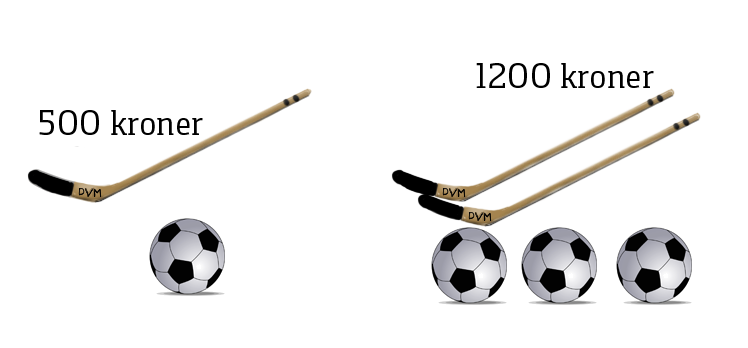

Lineære likningssystem og digitale verktøy
Contents
Lineære likningssystem og digitale verktøy¶

Du kan bruke opplysningene på bildet til ovenefor til å finne ut hva én fotball koster, og hva én hockeykølle koster. I dette tilfellet kan det være at du klarer å løse dette problemet uten å sette opp noen likninger. Likevel vil vi bruke dette eksempelet til å vise prinsippene bak likningssystem.
I et likningssystem er der to eller flere ukjente som vi ønsker å bestemme ut fra to eller flere likninger.
Dersom vi lar prisen for en ball være \(x\) kroner og prisen for en kølle være \(y\) kroner, så får vi følgende likninger:
img $\(\left[\begin{array}{c} x + y = 500\\ 3x + 2y = 1200 \end{array}\right]\)$
En løsning av et slikt likningssystem er de \(x\) og \(y\) som er slik at de tilfredsstiller begge likningene samtidig.
Det fins flere måter å løse slike likningssystem på.
Innsettingsmetoden
Addisjonsmetoden
Grafisk løsning
Løsning ved å bruke et digitalt verktøy
Her skal du lære disse metodene.
Innsettingsmetoden¶
I eksempelet med ishockeykøllene og ballene fikk du følgende likningssystem:
Innsettingsmetoden går ut på å bruke den ene likningen til finne et uttrykk for den ene variabelen og så sette dette uttrykket inn i den andre likningen.
Den øverste likningen gir at \( x=500-y\). Erstatter du nå \(x\) med \(500-y\) i den andre likningen får du en likning i kun \(y\):
Du kan nå sette dette inn i uttrykket du fant for \(x\) og få \(x=500-300=200\).
Altså er \(x=200\) og \(y=300\) .
\(x\) sto for prisen til ballen og \(y\) prisen til køllen. Det vil si at en ball koster 200 kr og en kølle koster 300 kr.
Oppgave 1
Bruk innsettingsmetoden til å løse likningssystemet:
Addisjonsmetoden¶
I videoen nedenfor får du se hvordan du kan løse likningssytem ved å bruke det som kalles for addisjonsmetoden. Denne metoden går ut på at du kan addere høyresiden av en likning til høyresiden av en annen likning så lenge du gjør det samme med venstresidene. Dette fungerer siden høyresiden og venstresiden av en likning skal være like.
I filmen så du at du kan addere et multiplum av en likning til en annen likning. Her ser du ett til eksempel som illustrerer dette.
Løs likingssystemet
\begin{alignat*}{3} 3x & +& 2y & =& 19 \ 2x & - & 3y & =& 4 \end{alignat*}
Dersom du ønsker å «bli kvitt» y-en fra denne likningen, så kan du multiplisere den øverste likningen med 3 og den nederste med 2. Da får du
Addere du nå disse to likningene sammen får du
Setter du dette inn i den øverste likningen, får du ( 3\cdot 5+2y=19\(. Dette gir deg \( y=2\).
Løsningen på likningssettet blir da ( x= 5\( og \(y=2\).